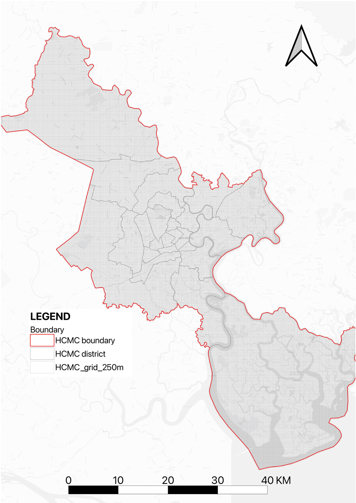

FRAMEWORK
Unified logic linking distribution, congestion, and supply
We build an integrated framework that moves from traffic state to demand dynamics and public transport supply. The key is a unified spatiotemporal unit: 250m × 250m grid plus time (weekday/weekend + time-of-day), enabling consistent comparison across layers.
Framework diagram

The diagram summarizes how data inputs are processed into comparable indicators under one 250m grid + time unit.
Input 1 — Street-view images (Mapillary)
Timestamp + location + object detection for motorcycles, cars, and buses, used to represent observed street-level traffic presence.

Input 2 — Road network data
Functional road categories and network density used as a proxy for transport structure and supply capacity in the street system.

Input 3 — Public transport data
Bus routes, stops, schedules, vehicle capacity, and fares. This supports schedule-based simulation and supply indicators.

Unified spatiotemporal unit
All indicators are aggregated into a consistent unit so layers can be compared directly:
- Spatial unit: 250m × 250m grid covering the study area
- Time unit: weekday vs weekend, plus time-of-day slices (e.g., hourly / key periods)
- Outputs: comparable grid-level indicators for distribution, congestion, and public transport supply
Placeholder — 250m grid schematic
Insert: grid overlay figure / legend explaining aggregation
How the framework connects to Part I–III
- Part I (Traffic Distribution): object-detected motorcycles/cars/buses from SVI → aggregated into 250m grid → mode-specific intensity maps
- Part II (Congestion): congestion indicators built under the same grid + time unit → comparative congestion patterns
- Part III (Public Transport Supply): schedule-based bus simulation → minute-level vehicle positions → aggregated into 250m grid → supply intensity (bus count & seat count)
Integrated interpretation
With all layers aligned (same grid + time), we can compare:
- Supply vs motorcycle distribution to identify underserved, high-dependence zones
- Supply vs bus share (street visibility) to interpret “visible vs invisible” transit presence
- Supply vs congestion to spot bottlenecks and priority intervention areas